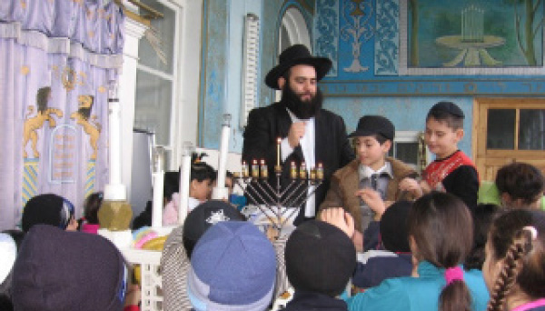

Wounded Shliach: I Want to Return to My Shlichus
When the shliach in Dagestan, R’ Ovadia Isakov, returned home after sh’chita late at night, an assailant lay in wait and shot him. The Chabad community around the world was shocked by the news and said T’hillim for the critically injured shliach. * The shliach was airlifted to Eretz Yisroel and boruch Hashem, he is doing much better .

Rabbi Ovadia Isakov, shliach of the Rebbe here for the past nine years, had finished shechting chickens in a slaughterhouse several hours away from his home. At 11 o’clock at night he drove up near his house. He parked his car and as he walked toward his house, he noticed someone he did not recognize waiting for him on the steps of his building. Despite the darkness, he could see that the person was a Moslem.
R’ Ovadia wasn’t particularly nervous. He was tired from the day’s exertion. He had no way of knowing that he was heading into the clutches of an anti-Semite. When he was ten meters away from his house, the stranger began walking toward him. Another few seconds passed and the man drew out his gun and shot R’ Isakov in the chest, aiming for his heart. R’ Isakov instinctively swiveled which in retrospect is probably what saved his life.
The assailant shot one bullet and hit the shliach in the right side of his chest, near the liver. R’ Isakov had the presence of mind to run toward the joint courtyard with the neighbors and began screaming for help. The assailant pursued him with his weapon drawn, wanting to finish him off, G-d forbid. When windows began opening though, he was frightened and ran away. R’ Isakov was conscious all this time and told the neighbors what had happened.
The neighbors called the police and emergency services who arrived quickly. Before he lost consciousness, R’ Isakov managed to provide the police with a description of his attacker who had not worn a mask.
Throughout this time, Mrs. Isakov was home with the children and did not hear what was going on outside.
In an exclusive interview with Beis Moshiach, through an interpreter, his wife said that because of the noise of the air conditioners and the closed windows, she did not hear her husband’s screams and maybe it was better that way. She is a refined, gentle person whose close friends say was always afraid to live in their place of shlichus, but followed her husband in her desire to be in the Rebbe’s army.
In the primitive hospital in Derbent, the doctors did all they could to save R’ Isakov’s life. They knew that the hemorrhaging in the stomach area had to be stopped; otherwise his life was in immediate danger. They brought him in for surgery. It would take hours before the story of the attack would be seen and heard on the news in Russia and Eretz Yisroel.
The news swiftly made its way to the Federation of Jewish Communities in Russia, led by R’ Berel Lazar, Chief Rabbi of Russia and the Rebbe’s shliach. It was decided that a team of Israeli doctors would be flown in so as to take R’ Isakov to a modern hospital in Eretz Yisroel. Time was working against the shliach and the chances of his recovering depended on professional treatment. The doctors in Derbent classified his condition as critical with immediate danger to life, which made the intervention by an advanced medical team a necessity.
The news spread. Children in camps said T’hillim for him. Lubavitchers around the world worriedly followed the news and everyone hoped for the shliach’s recovery.
BUILDING UP THE COMMUNITY
Derbent, the second largest city in Dagestan, has a population of 100,000 out of which 300 families are Jewish. In 1991, their numbers were ten times as large. Most Jews left for Eretz Yisroel and the United States. How did R’ Isakov end up in this faraway place?
The answer is simpler than the question. R’ Isakov was born in Derbent and raised in the era of communism by Jewish parents. He spent his childhood without any knowledge of Judaism. His artistic abilities attracted notice and he was awarded a scholarship by the Russian Academy of Art in Moscow. It was a valuable scholarship for six years of study. He knew he was Jewish but in his great ignorance he thought that Jews are a type of Christian, a lower class of Christian.
One day, the teacher who taught art and drawing introduced him to guests as one of the best up-and-coming Moslem artists. Ovadia said, “I’m not Moslem. I’m Jewish.” The teacher gave him a look and replied, “If you are a Jew, where are your threads?” This time, it was Ovadia’s turn to be surprised. What threads was the man talking about? He decided to pay a visit to a beis midrash, “a place where Jews learn” in Moscow.
He sat down on the side and listened to a class given by a man he did not know. The man was Rabbi Berel Lazar who saw how interested the art student was and urged him to go to Yeshivas Tomchei T’mimim there in Moscow. From there, he went to the Chabad yeshiva in Kiryat Malachi.
His wife Miriam attended Beis Chana in Dnepropetrovsk. After they married, they went on shlichus to Derbent, the place he knew so well. He quickly took over the running of Jewish life and was recognized as the leader. After getting a taste of the big city of Moscow and Eretz Yisroel and living in modern civilization, it wasn’t easy returning to Derbent to live. Dagestan is a beautiful place, a land of mountains and picturesque towns. If not for its corrupt government, Dagestan could easily have a booming tourist based economy due to its natural gifts. But Dagestan has a problem. It is incredibly derelict. There is not even a single hotel in the whole country. Its infrastructure is crumbling and the roads are in complete disrepair.
If that wasn’t enough, the awful security situation is enough to scare off tourists. Most residents of Dagestan are Moslem. In the marketplaces of Derbent, the typical greeting is “Salaam-Alaikum.” Once communism disappeared, mosques were built all over the country and in the evening you can hear the cry of the muezzin echoing in the streets.
Walking around in Derbent is like entering a time machine and returning to a different era. The streets are filthy, cracked and full of potholes. The houses, cars and people are covered in sticky Caucasus mud. Tough looking men in black, with stocking caps, congregate on the street corners and draw suspicious glares. The danger increases at night when the streets are shrouded in darkness. There are no street lamps in Derbent.
And yet, R’ Isakov chose this place as his place of shlichus, in order to ignite the spark of Judaism and turn it into a roaring fire. In an interview that he previously gave to Mishpacha, he was asked how he is able to live under such wretched conditions. What gives him the strength?
“The Rebbe taught us that the way to get close to G-d is by helping others, so we are here. My wife is a preschool teacher and our children are role models of how Jewish children should look, how to behave in shul, how to say a bracha, and how to learn Torah. With our presence here, we are making an important contribution to the spiritual flourishing of the community.”
R’ Isakov has been able to slowly build the community from the foundation. The high point for the community has been the building of the Jewish Center. The Dagestani media called the event a “historic occasion,” when it took place two years ago in the capitol city of Makhachkala. The inauguration of the Jewish Center, which includes a beautiful shul, a mikva, a preschool, a Jewish museum, a library, guest rooms, a soup kitchen, a kosher restaurant, a hall for events, and more, was most impressive.
The Jewish community building in Derbent is like a miniature world onto itself, a sort of Jewish Noah’s ark that is disconnected from the Dagestani sludge outside. On the first floor is the mikva. On the next floor is the shul and offices. On the top floor is the preschool, the only Jewish school in Dagestan as of now. On the top floor are the guest rooms as well as a kosher kitchen that provides cooked food for the preschool children and for community events.
A private plane with a delegation of three dignitaries left Moscow for the capitol of Dagestan in honor of the celebration. The Republic of Dagestan hosted the delegation with the honor it deserved. The president’s deputy greeted R’ Lazar as soon as he landed and in a long, armored convoy, they set out for the city.
When a mezuza was put up on the doorway of the new building, the new president of Dagestan was there. He had chosen this event as the first one he would attend in his new position. The addition of three new Sifrei Torah to the shul, with great pomp, added to the excitement. The president was most impressed by the beauty of the new building and expressed his amazement to the participants of the event.
The event was covered by all the Russian media and made a huge Kiddush Hashem. It raised the level of respect for Jews all over the former Soviet Union. Most astonishing is the fact that the building of the Jewish Center was funded entirely by the local community. The community in Derbent has awoken from its long sleep of decades, and in recent years has leaped forward.
“Members of the local community paid to renovate the old shul and turn it into a magnificent Jewish Center,” said R’ Isakov at that time. “In other places, you have to get donors on board to pay for a building as beautiful as this, while here, in the distant Caucasus, the locals have paid for it entirely on their own.”
In order to appreciate the magnitude of this generosity, you have to dig a bit deeper to the roots of this Caucasian Jewish community. Dagestan is a mountain area in the northern Caucasus Mountains, and since the dismantling of the Soviet Union, it has enjoyed full autonomy. Like its neighbor Chechnya, its population is primarily Moslem with a small but growing radical fringe.
They say that the Jewish settlement in Dagestan began in the time of the Babylonian empire. According to the tradition of Dagestani Jews, the first Jews arrived in the area during the Assyrian exile, following the destruction of the first Beis HaMikdash. They were joined by the Kuzarim, the large Jewish kingdom that existed there 1300 years ago.
JEWISH HISTORY
Derbent, on the Caspian Sea, stands out among Dagestan’s cities with its breathtaking scenery. It is a short distance from Iran and Chechnya. The history of the city is thousands of years old as you can see in its large, fortified walls, which in their better days also protected the tens of thousands of Jewish families that lived there. For many years, the Jews of Derbent lived religious lives. There were dozens of shuls, schools and mikvaos in every city until the communist decrees cut the links in the glorious chain of generations.
In the 1930’s, every third person in Derbent was Jewish. There were about 30,000 Jews in the city and dozens of shuls and schools. The last school in the city was closed in 1937 under communist government pressure. Over the years, the Jews left, died, or disappeared.
The Jews of Derbent underwent three major demographic crises. The first was in World War II, when 900 Jews were killed fighting the Germans. The second crisis occurred around the year 1972, when the Iron Curtain opened a bit and thousands of Jews took the opportunity to leave for Eretz Yisroel. The third crisis occurred in 1992-1994 when nearly everybody else left.
Unlike Russia, observant Jews here were not persecuted as long as they were discreet about their religiosity. There were always rabbanim in the city but there wasn’t Jewish chinuch, because it was forbidden by the government. That is how a generation grew up whose only Jewish awareness came from the practices they saw at home. Up until recently, young local Jews had no idea what Torah or Shabbos is.
And yet, the Jewish spark within the Jews of Derbent had not gone out entirely. Jews kept up regular secret minyanim with mesirus nefesh. They ran shiurim and arranged for clandestine kosher slaughter. The Rebbe Rayatz sent R’ Simcha Gorodetzky and R’ Shmaryahu Sasonkin there and the two worked diligently to strengthen Yiddishkait. In later years, following the great emigration from the CIS to Eretz Yisroel, the situation changed so that hardly any rabbanim and spiritual leaders remained throughout Dagestan.
The first change for the better began about ten years ago when R’ Ovadia Isakov returned to the country as a shliach and began to restore its Jewish character. Since he came, there are minyanim and plenty of shiurim. He also started a preschool and kosher sh’chita; he conducts funerals and takes care of whatever is needed in a Jewish community.
The list of tasks that are on R’ Isakov’s shoulders is never ending. He is the rabbi, responsible for the mikva, responsible for the kosher food that comes from Moscow, he makes shidduchim and when necessary, buries the dead. He is also the chazan, gabbai, baal koreh, darshan, memorial services leader, teacher, and he visits the sick, looks out for the elderly, and brings Jews back to the fold. Additionally, he is a talmid chacham and Chassid, and is a husband and father of four children.
Oh, and he is also the shochet who shechts hundreds of chickens for the community.
NERVE-WRACKING HOURS
R’ Eliyahu Lifshitz, one of R’ Isakov’s good friends who lives in the Chabad community in Tzfas, tells of those nerve-wracking hours.
“For the last five years, the Isakov family has spent time, every so often, in Tzfas,” said R’ Lifshitz. R’ Isakov visited them regularly. “He would come to visit and then return to his place of shlichus. He takes care of his community as he does his own family. Despite the major hardships, he is unwilling to leave and look for a replacement.”
One of the main reasons the family stays in Tzfas is their children’s chinuch. “In his place of shlichus, he is the only one who can teach them. There is no school and no teacher or tutor. He is the only religious Jew. His wife is a close friend of my wife. Both of them learned in Moscow, which is where I met him. Both of us learned in the kollel in Moscow.”
When R’ Lifshitz heard about the attack, he was shocked. “I knew instantly who it was and rushed to call the embassy in Moscow. I asked them to do all they could to save him and to make sure he was not left alone. They said they knew about it already and someone was taking care of the matter. I was extremely anxious because we knew he was seriously injured. We who were born and raised in Russia know how things work there. In places far from Moscow, it seems as though the communist regime still rules. People can simply disappear, and the medical services there are not ideal, to say the least.”
R’ Lifshitz said his wife tried numerous times to reach her friend, in vain, which made them exceedingly nervous. “Those few hours were extremely tense. When she finally managed to get through, my wife only became more nervous. The shlucha was very confused and was not speaking coherently.”
THANKS TO HASHEM’S KINDNESS
After all the arrangements were made, cutting through lots of bureaucratic red tape thanks to connections that Lev Leviev and other highly placed people in Eretz Yisroel and Russia have, a private plane left Eretz Yisroel with advanced medical equipment, a surgeon, a paramedic and an emergency care doctor. The plane flew directly to Makhachkala, being paid for by the Federation of Jewish Communities in Russia. They knew that the faster they got there, the higher the chances of saving the shliach’s life. A Russian helicopter was waiting, at the service of the medical team, and it rushed them to the hospital where the shliach was located. That saved them a trip of 200 kilometers to the hospital and back. The Dagestani doctors helped the members of the delegation in every way.
“We flew him by helicopter to the airport and within 3-4 hours were already in Eretz Yisroel,” said Dr. Ilia Kagan, who brought R’ Isakov to Eretz Yisroel and is treating him in Beilinson hospital. He reported that the shliach was in critical but stable condition. “His life is still in danger, but we are optimistic. He is undergoing exams and operations.
“It was a complicated flight with the rabbi still unconscious and on a respirator. Throughout the flight, the medical team did not stop caring for him for a minute,” said Mati Goldstein, head of the Magen division of the Zaka emergency service team, whose plane it was. “An ambulance that waited near the runway whisked him away to the hospital in Petach Tikva.”
Miraculously, before Shabbos, the doctors announced that R’ Isakov was doing better. The irreligious media called the enormous improvement a miracle. The reporter for Channel 2 said, “The doctors say the rabbi’s improvement is thanks to professional treatment, but I’m telling you, as someone who has been following this story, that this is an open miracle.”
The Jewish Federation of Communities in the CIS announced to the media on Erev Shabbos:
“Thanks to G-d’s kindness, the complex operation to save the shliach’s life went unusually well. The senior doctor said that they managed to stop the bleeding in the liver, and the function of the internal organs that were injured is satisfactory. His general appearance is much improved. The shliach is fully conscious now and is talking with the bachurim whom we sent to stay with him over Shabbos. The family thanks all the Chassidim and the shluchim, among all of Klal Yisroel, for their prayers.”
The shliach’s family was flown from Derbent to Moscow on Thursday and spent Shabbos with the Chabad community there. On Monday afternoon they flew to Eretz Yisroel to visit their father and husband who is recovering from the operation.
Another dramatic improvement began on Sunday when R’ Isakov was transferred from the ICU to a regular department. Dr. Kagan told a press conference that “the rabbi is fully conscious and his current condition is light to moderate.”
R’ Isakov was able to speak and told a little bit about what happened to him.
“Things like this are always happening. On Sukkos, they threw a bomb at the mikva which is near the shul; they threw a big rock at our house and now this.” He said that he and his family do not live in fear because they are used to life in the city. He even said he wants to return to his shlichus. “There is a good community there and many families and someone has to work with them.”
MANHUNT
In the meantime, the Dagestani police are working to catch the perpetrator or the organization that sent him. “He has lived there for nine years already. Nobody knows why this happened. It’s a very Islamist area and I am afraid it’s connected with that,” said the shliach, R’ Boruch Gorin, spokesman for the Federation of Jewish Communities of Russia.
This is not the first anti-Semitic act that R’ Isakov has experienced. Until now, the incidents involved property. Two years ago, a rock was thrown into his bedroom when he and his family were home. The Jewish community was attacked that same week when hoodlums broke the windows of the nearby shul.
The Moslem community in the area has grown and in recent years has been augmented by Al Qaeda radicals whom the Russians have been fighting unsuccessfully. Despite attempts by the government to show that the city is tolerant of all religions, it seems as though the tolerance for Jews has reached an all-time low. The Jews of the community hope that perhaps now, after what happened, the government will properly address the issue.
After diplomatic efforts and the intervention of the shliach, R’ Aharon Gurewitz, who is the head Jewish chaplain of the Russian army, the local police is making great efforts to locate the attacker. R’ Gurewitz met with the local police in Dagestan. He remained in Derbent on Shabbos in order to support the Jewish community and the mekuravim of the Chabad house who were in shock over the shooting of their beloved rabbi.
The president of the Republic of Dagestan told R’ Gurewitz that he instructed security forces to make every effort to capture the assailant and to find who backed him, if it turns out this was organized terror whose purpose is to harm Jews. He affirmed his commitment to enable full freedom of religion and guaranteed the full freedom of open, Jewish activity without fear.
THE NEW CHIEF RABBI PROMISED TO VISIT DAGESTAN
R’ Isakov has been visited by a nonstop stream of high level visitors. The first to visit him was the newly elected Ashkenazic Chief Rabbi, Rabbi Dovid Lau. R’ Lau’s good friend, the Chassidic askan, R’ Yaakov Glauberman, accompanied him. The latter told Beis Moshiach that R’ Lau himself asked him to arrange a visit even before he knew of the improvement in R’ Isakov’s condition.
“The story of the attack on the shliach touched him and he felt he must visit him,” said R’ Glauberman.
“I want to strengthen you in the continuation of your shlichus,” said R’ Lau to the shliach emotionally. “After you recover and return to your place of shlichus, I will come and visit you,” he promised.
R’ Isakov’s family told R’ Lau that on Motzaei Shabbos, R’ Isakov asked to be told a story of the Baal Shem Tov, as is customary at a Chassidic Melaveh Malka. This moved R’ Lau and all others present.
T’hillim should still be said for speedy recovery of Ovadia ben Zahava Chaya. Those who would like to make a donation to the shliach’s work can make a deposit to the account in Bank HaDoar, in the name of Chaya Miriam and Ovadia Isakov, account #23237969.
Update: Only one week and two days after he was shot and critically wounded in an attack near his home in Derbent, Rabbi Ovadia Isakov was released from the hospital on Sunday.
Nosson Avrohom. "Wounded Shliach: I Want to Return to My Shlichus." Beis Moshiach, no. 891 (August 6, 2013).